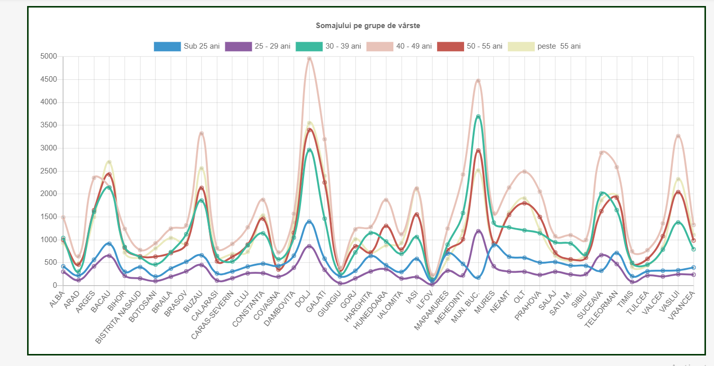
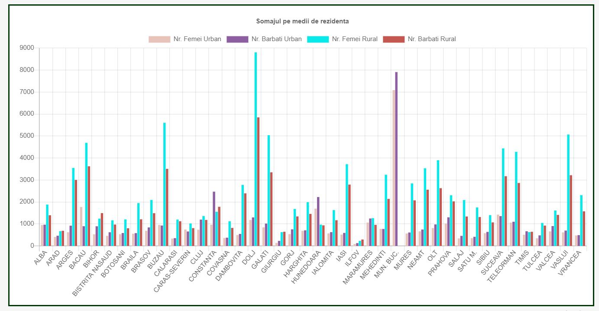
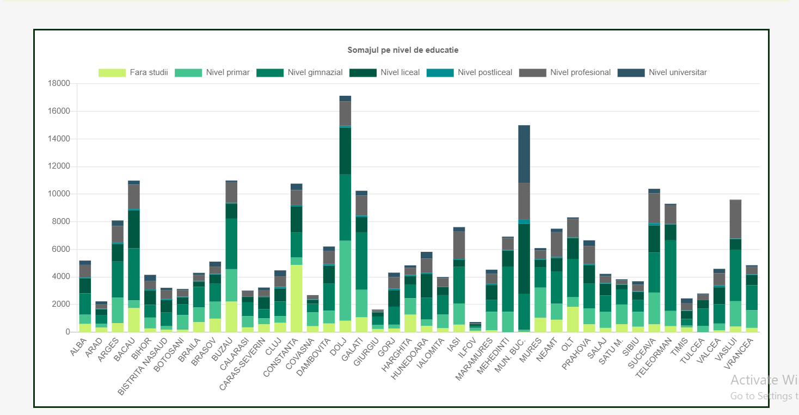
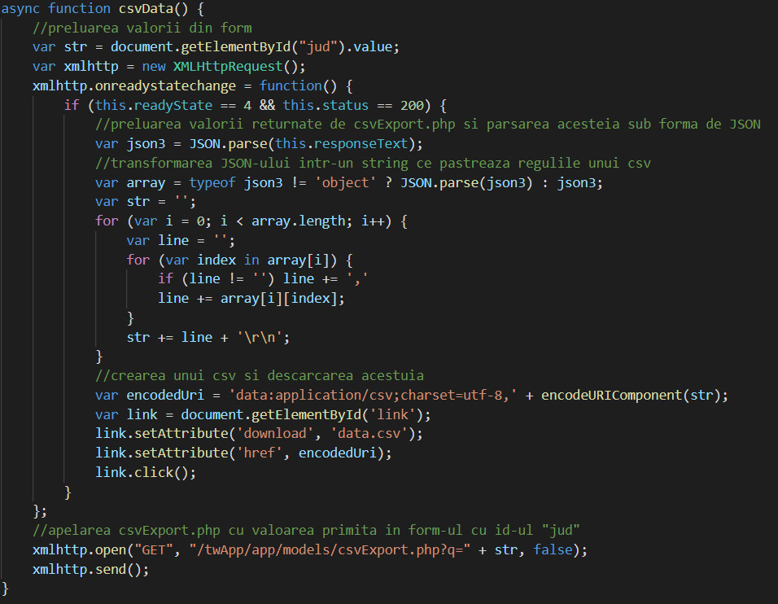
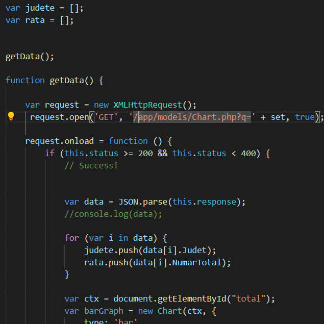

Recurgând la un API REST/GraphQL propriu, să se realizeze un instrument Web de vizualizare
și de comparare multi-criteriala (pe județe, nivel de educație, grupe de vârstă, mediu, perioadă de timp
etc.) a datelor publice referitoare la șomajul din România pe ultimele 12 luni.
Statisticile, plus vizualizările generate – minim 3 maniere, plus cele cartografice pe baza unor
servicii Web specializate – vor putea fi exportate în formatele CSV, XML, SVG si PDF.
Database
Baza de date a fost în MySql pus la dispoziție de intrumentul phpMyAdmin.
În vedere respectării aspectului privind securitatea în prelucrarea sau introducerea datelor au fost
folosite
prepared statement-uri de fiecare data cand
a fost interogata baza de date.
Tabelul Registru
Tabelul unde vor fi stocate toate detaliile legate de un utilizator. Datele introduce in acest tabel sunt
furnizate de form-ul din pagina de sign-up si corespund
credentialelor contului nou creat.
Structura tabelui :
Fig.1 - Structura tabelului registru
Un exemplu de date stocate in tabelul registru:
Fig.2 - Exemplu de date din tabelulul registru
Tabelul Data
Stocheaza date privind rata somajului (%) in Romania pe ultimele 12 luni si dupa 3 criterii: total, femei
si barbati.
Aceste date vor fi folosite apoi pentru generarea hartii de pe pagina "statisticiCartografice.php".
Datele sunt introduse de administratorul bazei de date si puse la dispozitia clientului prin cadrul
form-ului de pe pagina
mentionata mai sus.
Structura tabelului:
Fig.3 - Structura tabelului data
Asa arata un exemplu de date stocate in tabel:
Fig.4 - Exemplu de date din tabelulul data
Tabelul RataLunaAnul
Date din acest tabel sunt introduse de administratorul bazei de date .
Tabelul este realizat pentru fiecare luna a anului si contine ca si date raportate per judet: numarul
total someri, numarul total someri femei,
numarul total de someri bărbați, număr someri indemnizati, număr someri neindemnizati, rata somajului
(%) ,
rata somajului feminina (%) , rata somajului masculina (%).
Structura tabelului:
Fig.5 - Structura tabelului RataLunaAnul
Exemplu de date stocate in tabelul RataLunaAnul:
Fig.6 - Exemplu de date din tabelulul RataLunaAnul
Tabelul MediiLunaAnul
Date din acest tabel sunt introduse de administratorul bazei de date .
Tabelul este realizat pentru fiecare luna a anului si contine ca si date raportate per judet: numar total
someri din mediul
urban, numar someri femei din mediul urban, numar someri barbati din mediul urban, numar total someri
din mediul rural,
numar someri femei din mediul rural, numar someri barbati din mediul rural.
Asa arata structura tabelului rata:
Fig.7 - Structura tabelului MediiLunaAnul
Exemplu de date stocate in tabel:
Fig.8 - Exemplu de date din tabelulul MediiLunaAnul
Tabelul EducatieLunaAnul
Date din acest tabel sunt introduse de administratorul bazei de date .
Tabelul este realizat pentru fiecare luna a anului si contine ca si date raportate per judet: fara
studii,
invatamant primar, invatamant gimnazial, invatamant liceal, invatamant posticeal, invatamant
profesional/arte si meserii,
invatamant universitar.
Structura tabelului:
Fig.9 - Structura tabelului EducatieLunaAnul
Exemplu de date stocate in tabel:
Fig.10 - Exemplu de date din tabelulul EducatieLunaAnul
Tabelul VarsteLunaAnul
Date din acest tabel sunt introduse de administratorul bazei de date .
Tabelul este realizat pentru fiecare luna a anului si contine ca si date raportate per judet: fara
studii,
Sub 25 ani, intre 25 - 29 ani, intre 30 - 39 ani, intre 40 - 49 ani, intre 50 - 55 ani peste 55 ani.
Structura tabelului:
Fig.11 - Structura tabelului VarsteLunaAnul
Exemplu de date stocate in tabel:
Fig.12- Exemplu de date din tabelulul VarsteLunaAnul
Front End
Paginile site-ului sunt responsive, redimensionarea in pagina are loc automat in functie de
dimensiunile ecranului dispozitivul utilizat, inclusiv pe device-uri ca iPhone 5 SE, cu ecran ingust.
Partea de sus a site-ului este aceiasi pentru toate paginile, reprezentând meniul de navigare. Aceasta este
compusa
din logo-ul site-ului si denumirile paginilor existente. In privinta adaptarii meniului pentru dispozitivele
mobile acesta este
inclus intr-o lista ce poate fi accesata prin apasarea butonului ce va aprea automat in partea dreapta sus
la redimemsionarea paginii.
Navigarea peste elementele meniului pe ecrane mari este interactiva, acestea in urma hover-ului fie
schimandu-si culoarea textului,
dimensiunea, culoarea de fundal sau afisand in caz de existenta elemente aflate in subordine. Pentru
dipozitive mobile pentru a afisa
sublistele din meniu se apasa click pe elementul ce are in dreptul lui o sageata cu orientarea in jos.
Iconitele pentru sagetile din meniu,
pentru deschiderea si inchiderea meniului au fost preluate de pe
Icons8.
Sign-Up
Pagina de Sign Up are denumirea de index.php din folderul app/views/register.
Pagina de Sign Up:
Fig.13- Pagina de Sign Up
Login
Pagina de Login are denumirea de index.php din folderul app/views/login.
Pagina de Login:
Fig.14- Pagina de Login
Logout
Logout-ul se face apasand butonul de logout de pe pagina principala: app/views/home/index.php
Pagina principala cu butonul de logout:
Fig.15- Pagina principala cu butonul de logout
Resurse Cartografice
Pagina Resurse Cartografice are denumirea resurseCartografice.php si se afla in app/views/statistici.
Pagina Resurse Cartografice:
Fig.16- Pagina Resurse Cartografice
Statistici
Pagina Statistici are denumirea indexLuna.php si se află în app/views/statistici.
Pagina Statistici:
Fig.17- Pagina Statistici
Aceasta conține statisticile somajului pe baza a patru criterii dispuse pe site in ordinea: numar total
ri rata pe sexe, grupe de varstă, medii de rezidență si
educatie. Diagramele pentru a ilustra statisticile specifice fiecărui criteriu au fost realizate in
javascript prin intermediul instrumentului
Chart.js.
Statisticile pentru fiecare criteriu pot fi exportate de utilizator in trei tipuri de document: PDF, CSV,
XML. Formatele sun afisate într-o listă în urma hover-ului pe butonul Descarcă. Butoanele Descarcă PNG,
Descarcă SVG exportă diagramele in formatele specificate.
Primul chart este un bar chart. Pe axa X a chart-ului sunt judetele, iar pe axa Y numarul
total de someri corespunzatori lunii si categoriei de varsta.
Fig.18- Chart pentru numar total șomeri
Al doilea este un line chart, ce va contine cate o inregistrare inregistrare pentru fiecare grupa de
varsta. Pe axa X a chart-ului sunt judetele, iar pe axa Y numarul
total de someri corespunzatori lunii si categoriei de varsta.

Fig.19- Chart pentru someri pe grupe de varsta
Al treilea chart este un grup bar chart continand pentru fiecare judet 4 inregistrari : numar someri
femei urban, numar someri barbati urban,
numar someri femei rural, numar someri barbati rural.

Fig.20- Chart pentru someri pe medii de rezidentă
Al patrulea este un stacked bar chart, ce va contine cate o inregistrare pentru fiecare grupa de varsta.
Pe axa X a chart-ului sunt judetele, iar pe axa Y numarul
de someri fara studii, invatamant primar, invatamant gimnazial, invatamant liceal, invatamant posticeal,
invatamant profesional, invatamant
universitar.

Fig.21- Chart pentru someri grupati in functie de studii
Referinte
Pagina Referinte are denumirea index-referinte.php si se gaseste in app/views/referinte.
În cadrul ei sunt incluse o serie de link-uri către instrumentele folosite în construcția site-ului.
Pagina Referinte:
Fig.22- Pagina Referinte
Contact
Pagina Contact are denumirea index-contact.php si se gaseste in app/views/contact.
Aceasta pune la dispoziția utilizatorului un formular prin care poate semnala o problema, dar cu
specifactia realizării unui cont dacă acesta nu a fost creat.
Pagina Contact:
Fig.23- Pagina Contact
Back End
Arhitectura generala a proiectului este bazata pe MVC cu unele execeptii in care s-a optat pentru prelucrea
datlelor
cu apeluri ajax in schimbul apelului unui model.
Sign-Up
Sign-Up-ul se face prin introducerea datelor corespunzatoare noului cont in formularul de pe pagina
app/views/register/index.php.
Acestea sunt apoi trimise catre app/models/registru.php unde sunt verificate urmatoarele criterii:
completarea tuturor spatiilor
din cadrul form-ului, respectarea formatului standard al fiecarui tip de data, unicitatea numelui si
adresei de email introduse.
Fig.24- Preluarea datelor din formFig.25- Verificarea datelor
Daca testele de mai sus sunt trecute, se va insera in tabela "registru" un nou rand continand
credentialele contului nou. De asemenea,
parola va fi salvata cu valoarea unei functii hash, oferindu-se astfel mai multa securitate pentru
utilizatori.
Altfel, va aparea o fereastra de tip alert cu un mesaj sugestiv, cazuri gestionate in api/db_error.php.
Fig.26- Inserarea datelor in baza de dateFig.27- Fisierul db_error.php
Login
Login-ul se face prin introducerea datelor corespunzatoare unui cont in formularul de pe pagina
app/views/login/index.php.
Acestea sunt apoi verificate. Daca datele apartin unui cont existent in baza de date, se initiaza o
sesiune, setand $_SESSION['id_user']
cu id-ul corespunzator acelui cont si se afiseaza un mesaj de bun venit, daca datele introduse nu
apartin niciunui cont, se afiseaza un mesaj
de eroare.
De asemenea, daca utilizatorul este deja logat, va aparea un mesaj corespunzator, iar acesta
nu se va mai putea loga din nou,
Fig.28- Login backend
Logout
Logout-ul se face prin apasarea butonului de pe pagina principala, care apeleaza codul din
app/models/logout.php. Daca o sesiune cu un id
de utilizator a fost initiata, aceasta este eliminata, iar pe pagina principala va aparea un mesaj
corespunzator.
Daca nu a fost efectuata o logare in prealabil, clientul va fi informat printr-un mesaj.
Fig.29- Logout backend
Resurse Cartografice
Pe aceasta pagina se va afisa o interpretare a datelor din tabela "data" sub forma unei harti
choropleth.
Aceasta este generata folosind Leafletjs, iar
datele afisate pe harta corespund coloanei alese
prin form-ul de pe pagina, folosind Ajax (public/js/map/map.js).
In functie de valoarea selectata de utilizator in cadrul form-ului, vor fi preluate anumite date din
baza de date
(in cadrul app/models/getdata.php) si se va apela functia buildMap (public/js/map/leaf.js), care va
genera harta, cu datele selectate.
Fig.30- Fisierul map.js
Harta va putea fi salvata sub forma de PNG si SVG, folosind biblioteca javascript
Html2canvas, functiile
pentru fiecare conversie fiind gasite in public/js/map/capture.js, respectiv public/js/map/svg.js.
Fig.31- Cod pentru salvarea hartii ca PNG din fisierul capture.jsFig.32- Cod pentru salvarea hartii ca SVG din fisierul svg.js
De asemenea, datele vor putea
fi exportate sub forma unui fisier csv, printr-o functie Ajax gasita in public/js/map/csv.js, selectarea
si redactarea corespunzatoare
a acestora se face in app/models/csvExport.php, cod apelat in urma functiei Ajax descrisa precedent.

Fig.33- Cod pentru salvarea hartii ca CSV din fisierul csv.jsFig.34- Fisierul csvExport.php
Pentru eficienta maxima a site-ului, toate fisierele javascript mentionate mai sus, au fost
compresate in fisierul mini.js din folderul
public/js/map folosind tool-ul Terser.
Statistici
Pagina permite vizualizare staticticilor criteriale despre somaj prin intermediul chart-urilor
construite cu instrumentul
Chart.js
Preluarea datelor pentru construcția diagramelor se realizeaza cu Ajax. In functie de luna aleasa de
utilizator in controller-ul statistici.php sunt trimise catre view-ul indexLuna.php locatile de selectie
a datelor
acestea sunt
captate in primul script de la sfarsitul body-ului
si preluate mai departe de restul scrip-turilor de apel specifice fiecarui fiser de constructie a
diagramei corespunzatoare.
In fiecare fiser script de contructie a diagramei este apelat prin Ajax Chart.php din models,
fiser care construieste un json pe baza join-ului
intre tabele specifice unei luni (ex. rataMartie2020, mediiMartie2020, varstaMartie2020,
educatieMartie2020) primite
in urma apelului Ajax. In fiser script al sunt preluate din json doar datele necesare constructiei
diagramei.

Fig.35- Apel ajax al fiserului Chart.phpFig.36- Fisierul Chart.php
Exportarea documentelor se realizeaza prin intermediul unui form ce are ca si metoda get si trei inputuri
unul pentru descarcare
XML, altul pentru CSV si ultimul pentru PDF specifice fiecarui criteriu in parte.
Verificarea carui document se doreste descarcarea se face in controlorul statistici.php
acesta apeland modelul corespunzator documentului dorit cu tabelul specific si criteriul specific. In
functie de criteriu se construieste
forma documentului.
Constructia fiserelu XML s-a realizat folosind modelul DOM. In urma apelului constructorului in XML.php
este construit documentulu
si trimis catre export prin
header()
setand specificatiile conform transferul de documente xml.
Documentele CSV sunt construite in modelul CSV.php iar scrierea in document se realizeaza cu functia
fputcsv() setand header()
specific
pentru exportarea documentelor CSV
Documentele PDF sunt construiete cu ajutorulu librariei
fpdf.
Contact
Utilizatorul poate semnala o problema privind interactiunea in urma navigarii pe site prin completarea
unui formular.
Acesta este rugat sa si faca un cont daca nu are unul altfel cererea nu va fi luata in considerare
Daca are un cont sau si a facut unul este verificat daca email-ul pe care il introduce este cel valid
daca nu va fi atentionat
print-un mesaj de eroare, la fel daca nu sunt completate toate campurile.